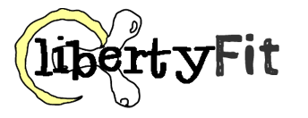

- The Story So Far...
- Mercer County College, West Windsor, NJ
- January 2012-May 2012
- Information Architecture/Interaction Design
- Client: Liberty Science Center
- 
- In a team, created a fitness app for 9-14 year olds. The app featured different stages where users could learn about: meal planning, exercise.calories, the digestive system, etc.
- Developed practical skills and knowledge of web design while executing a collaborative, interactive project for a real-world, professional client. All production based on client goals, messages, and deadlines outlined during the project definition phase. Exposure to an agile environment.